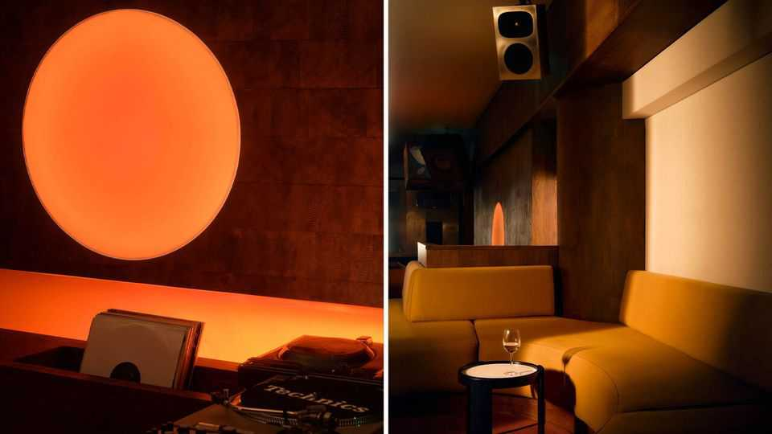
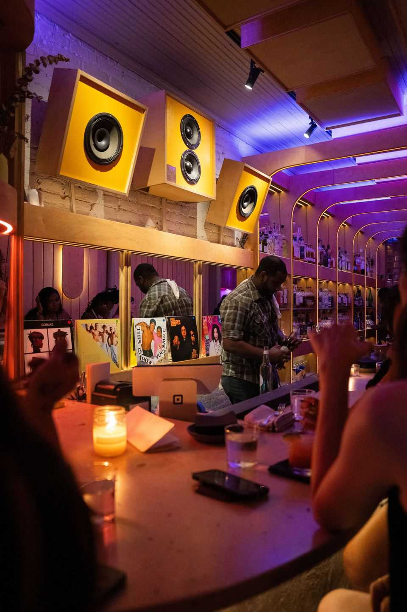

Japan’s music cafés are striking a chord abroad
New venues are inspired by a century-old tradition

Aug 20th 2026
Space Talk, located in the London district of Clerkenwell, takes music seriously. Before the bar opened in 2024, its owner enlisted an architect, designer and sound engineer to create the perfect acoustic environment. Resembling the deck of a wooden spaceship, the bar is divided into four zones. On a recent evening, your correspondent sipped cocktails while trippy electronic music floated out of the bespoke sound system. In its ethos, Space Talk is one of many spots around the world loosely inspired by Japan’s ongaku kissa (music cafés). These venues are commonly known as listening bars or hi-fi bars.
The first ongaku kissa opened in Japan during the 1920s. Visitors drank tea or coffee as music—often classical, tango or swing—played through gramophones. In the decades after the second world war, cafés devoted to jazz grew popular. Imported records and audio equipment were expensive, and jazz kissa offered a place for enthusiasts to hear the latest album by Miles Davis or John Coltrane. They were places for quiet, reverential listening.
Owners would (and still do) display a fussy attention to detail. High-quality speakers are a must; the nerdiness often extends to amps, turntables and styluses. (Gramophones have gone, but vinyl is still very much in vogue.) This music is not merely for ambience: the act of listening is central to the experience. Many kissa ask visitors to remain silent. Kawasaki Toshiya, who runs his own listening bar in Tokyo, says the atmosphere this creates is akin to “sitting in meditation at a temple”.
The listening bars that have sprung up in the West, South America and Africa—most of which have opened in the past decade—rarely have stringent rules on chitchat. Space Talk, for instance, has not banned nattering, but it has implemented a “no photos or videos” policy. All Blues, a venue in New York, politely asks visitors to “let the music do the talking”. Some bars host dedicated events where guests can hear an album in full or listen to music tied to a particular artist or theme.

The “real magic” of ongaku kissa culture is to create an environment “where you can be genuinely moved to the core by music”, says Nick Dwyer, the director of a documentary on Tokyo’s music cafés. What makes this new wave of venues interesting, he says, is that proprietors have “their own take” on the format and are adapting it into “something that works in London, New York, Barcelona or wherever”.
There are three reasons why the ongaku kissa model has succeeded as a cultural export. One is Japanomania. A record 43m foreign holidaymakers visited the country in 2025. Over several decades, Japan has established itself as a trendsetter and tastemaker in everything from video games to fashion and design, meaning that where the Japanese lead, others will follow.
The second reason is that listening bars and ongaku kissa offer an appealing alternative to nightclubs, which are in decline. These bars provide a relaxed, stylish environment for retired ravers and youngsters alike. Here, enjoying music need not mean enduring punishing opening hours (and punishing hangovers).
The third reason is that these bars offer a distinctive, curated experience to suit a wide variety of tastes. Jim Hanmer, the co-founder of Jazu, another listening bar in London, made a pilgrimage to Japan to visit several jazz kissa. (“Jazu” is a nod to the Japanese pronunciation of “jazz”.) He was drawn to the venues that reflected the owner’s lifelong passion. In these places, “you could listen to a record that you’ve heard 30 times before, but because you’re in this unique environment, it sounds totally different.” At a listening bar, even an old track can find a new groove. ■